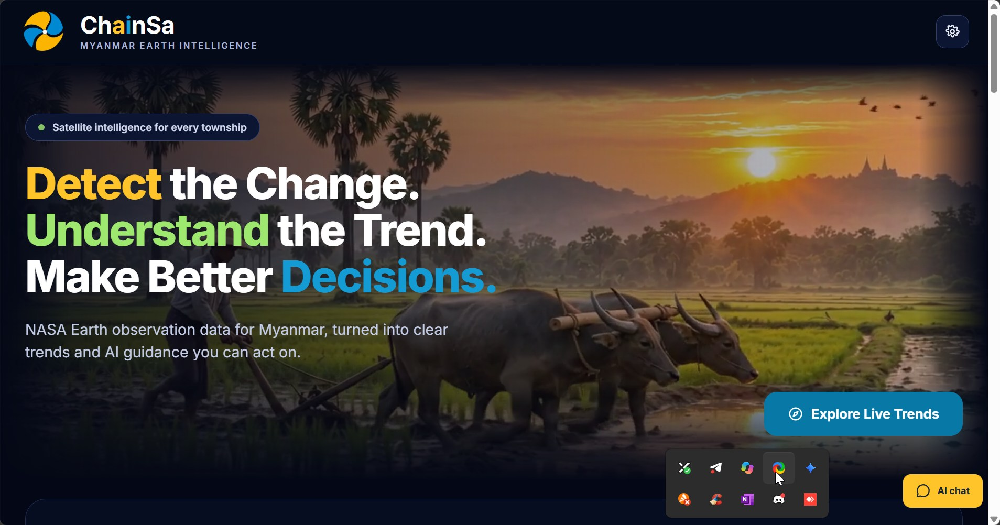
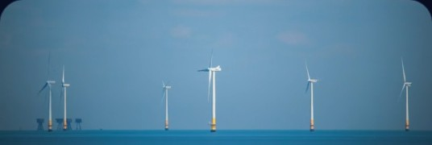

Detect the Change.
Understand the Trend.
Make Better Decisions.
NASA Earth observation data for Myanmar, turned into clear trends and AI guidance you can act on.
Agriculture
Crop health, rainfall, soil, temperature
Infrastructure & Urban Change
Land use, urban growth, construction
Water
Water resources, river, water supply

Energy & Electricity
Solar potential, electricity access, demand
Environmental Change
Forest, biodiversity, land cover
Disaster Intelligence
Flood, storm, earthquake, drought
AI Decision Support
Pick who you are. The assistant reads the same data and answers for your decision.
Based on these trends, what should farmers in Yangon consider?
Recommended Actions
Observed Trends
Explore changes over time and check whether the available observations support a statistically significant trend.
Township Earth Observation Workspace
3-Pane interactive analytics engine powered by NASA Earth observations
Indicators
36Note: Earth observations are processed in UTC at 00:00 and 12:00 daily.